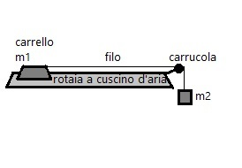

E' dato un carrellino di massa \(m = 0.250kg\) situato su una rotaia a cuscino d'aria di \(lunghezza=1m \), sulla quale l'attrito è trascurabile
che viene trainato da una massa \(m2 = 0.050g\) soggetta a gravità e collegata al carrellino, per trainarlo, attraverso un filo e carrucola
come mostrato dall'immagine che segue:

Ora, per ipotesi, facciamo sì che il carrellino possa contenere una certa massa d'accqua "ma",
che però varia durante il viaggio del carrellino da 0g a 50g aumentando in modo costante,
Tenendo conto che il viaggio \(\Delta s\) è lungo quanto la lunghezza della rotaia, allora \(\Delta s=l=1m \)
Il sistema, ora meglio descrito, è mostrato dalla seguente immagine:
E Il variare del'acqua si può esprimere con il seguente grafico \(ma(s)\):
Ora, ciò che bisogna fare è descrivere il sistema nel miglior modo possibile,
Ho deciso di farlo attraverso alcune formule, che descrivano nel miglior modo possibile tutto.
Inoltre, abbinate alle formule, ho deciso di inserire grafici che ritengo particolarmente significativi,
oltre a una simulazione molto basilare, a computer, sempre presente in questa pagina.
Ma sia i grafici che la simulazione deriveranno però dalle formule prima citate, ottenute attraverso il ragionameno che segue
La formula che vorrei ottenere sarebbe \(s(t)\) (dove "s" è lo spostamento del carrello) perchè sarebbe quella che descriverebbe meglio il moto,
oltre a poi altre formule secondarie, ma non avendo apperentemente i dati necessari, proviamo a ricavarli da ciò che abbiamo.
Di questo sistema si condosce, massa, spazio, e accelerazione gravitazionale,
Ad intuito, si intuisce che se ne consocono le forze, per via del secondo principio della dinamica infatti \(F= ma\) e noi abbiamo sia accelerazioni che masse;
Chiamata Ftot la forza applicata all'intera massa del sistema, F2 la forza applicata a m2 e, F1 la forza applicata a m1+ma attraverso f2 (dove m1+ma è la massa spostata di carrellino e acqua assieme), si ottiene la seguente schematizzazione del sistema:
Essendo F2 costante(dato che m2, a cui la forza è applicata, non cambia e neanche l'accelerazione g lo fa),
si può affermare che \(F2=m2 \cdot g=0.050 \cdot 9.81=0.4905N\).
Ora, F2 è l'unica forza trainante del sistema, e quindi \(Ftot = F2\), da qui possiamo trovare l'accelerazione "aTot" applicata all'intero sistema secondo la formula inversa
Infatti \(aTot = \frac{Ftot}{mTot} = \) dove mTot è la massa totale del sistema, (\(mTot=m1+m2+ma\))
Una volta ottenuta l'accelerazione del sisterma provocata dalla soggezione alla gravità di m2,
possiamo ricavare F1, ovvero, come detto, la forza applicata a m1+ma, secondo la formula \(F1 = (m1+ma)\cdot aTot\).
Da questa possiamo ricavarci per formula inversa l'accelerazione del carrello con l'acqua, con la formula: \(a1 = \frac{f1}{m1+m2} = \frac{(m1+ma)\cdot aTot}{m1+m2} = aTot \) e quindi possiamo affermare che \(a1 = aTot = \frac{Ftot}{mTot} \)
In questo modo abbiamo trovato l'accelerazione del sistema, ma qualcosa non torna, infatti mTot rimane incognito, in quanto \(m1+m2+ma\) è sconosciuto perchè "ma" varia.
Ma, per ipotesi, "ma" varia in modo direttamente proporzionale allo spazio \(\Delta s\) del carrellino,
ciò vuol dire che \(\frac{ma}{\Delta s} = k\) dove k è una costante.
Noi però conosciamo una valore di "ma" in corrispondenza di un \(\Delta s\),
infatti, per ipotesi, quando \(\Delta s = 1m\) , \(ma = 50g = 0.050kg\).
Da questo possiamo ricavare che \( k = \frac{ma}{\Delta s} = \frac{0.050}{1} = 0.05 \).
Quindi per formula inversa, conosciuto \(\Delta s \longrightarrow ma(\Delta s) = k \cdot \Delta s\).
Detto ciò possiamo affermare quindi che \(a1(\Delta s) = \frac{Ftot}{mTot} = \frac{Ftot}{ ((k \cdot \Delta s) + m1 + m2) }\)
Ora, l'obbiettivo era raggiungere \(s(t)\) ma dato che tutto dipende dal variare della massa, che a sua volta deriva dallo spazio, mi sembra più sensato trovare una formula che dipenda dallo spazio, quindi \(t(\Delta s)\)
Ma l'obbiettivo non cambia, infatti trovata quella formula, se ne dovrà trovare una inversa per arrivare all'obbiettivo iniziale \(s(t)\).
Per trovare \(t(\Delta s)\) bisogna seguire il seguente ragionamento:
Data la legge del moto rettilineo uniformente accelerato secondo la quale \(s = \frac{1}{2}at^2 \) per formula inversa
\(t(\Delta s) = \sqrt{\frac{2\Delta s}{a(\Delta s)}}\) e dato che noi conosciamo \(a(\Delta s)\), possiamo affermare che
\(t(\Delta s) = \sqrt{\frac{2\Delta s}{\frac{Ftot}{ ((k \cdot \Delta s) + m1 + m2) }}} =\sqrt{\frac{2\Delta s((k \cdot \Delta s) + m1 + m2)}{Ftot}} = \sqrt{\frac{2(k\Delta s^2 + ( m1 + m2)\Delta s) }{Ftot}}\)
Volendo travare però s(t) ed essendo quindi l'unica incognita \(\Delta s\) perchè "t" è dato (per un ipotesi, come nel caso della simulazione a computer preparata ) e le altri sono costanti, possiamo ricavare, attraverso alcuni passaggi che:
Trovandoci quindi davanti a un'equazione di secondo grado in \(\Delta S\), possiamo ricavare quest'ultimo secondo la formula dell'algebra:
\(\Delta S(t) = \frac{-(m1+m2)\pm \sqrt{(m1+m2)^2+4\cdot k\cdot 2t^2Ftot}}{2k}\)
Naturalmente si otterranno due risultati, uno positivo e l'altro negativo, ma essendo il moto direzionato e positivo, il valore di \(\Delta s\) negativo è non significativo e non se ne deve quindi tenere conto.
Ora che abbiamo ottenuto il modo di calcolare \(\Delta s(t)\), con le formule precedentemente elencate possiamo di conseguenza trovare m(s), F1(s), a1(s), t(s),
e avendo a(s) e t(s), possiamo avere anche v(s) = a1(s)*t(s) (non riscrivo la formula completa per motivi pratici) trovando così molte formule utili a descrivere il sistema come richiesto.
Naturalmente riproponendo tutte le formule con k=0, si ottiene il sistema che ci sarebbe se l'acqua non aumentasse.
E' curioso vedere la differenza tra i due sistemi (con acqua e senza), e questo confronto sarà fatto nei grafici seguenti, fatti con excel.
Ho voluto esaminare solo i seguenti grafici perchè mi sembravano quelli più significativi per la descrizione del sistema, anche se ce ne sarebbero molti altri.
GRAFICO 1
Questo grafico descrive la velocità al variare dello spazio, come si può vedere la velocità tende ad aumentare, ma tende a farlo sempre di meno, man mano che lo spazio aumenta.
Si può notare anche come effettivamente la velocità del carrellino, quando si considera l'aumento dell'acqua, tenda ad aumentare meno di quanto non farebbe se non ci fosse,per l'appunto, l'acqua.
GRAFICO 2
Qui invece si pò notare come l'accelerazione rimanga costante se non si considera l'aumento della massa d'acqua, mentre, si può notare come diminuisca bruscamente all'aumentare dello spazio e quindi all'aumento della massa d'acqua.
GRAFICI 3 e 4
In questi grafici, che rappresentano pressochè la stessa cosa, ovvero le formule che erano poste come obbiettivo della relazione, si vede, in particolare nel secondo ( s(t) ), come all'aumentare del tempo i carrelli, sia quello con l'acqua che quello senza, vanno avanti, ma arriverà prima quello senz'acqua, quindi più leggero, e più veloce.
Inoltre la curva formata dalle linee sta anche a rappresentare l'accellerazione nel sistema, costante nel caso del carrello senz'acqua, e variabile, con una curva, e quindi un accelerazione, che sembrano sempre meno accentuate man mano che si va avanti, nel caso del carrello con l'acqua. Questo grafico quindi, se letto correttamente rappresenta in sè anche i precedenti, e in realtà tutti gli altri grafici ommessi, questo a verificare la coerenza della prova.
Dato che dopo tutto, tutte le formule matematiche sono funzioni e varibili, ho provato a riportare questo procedimento in una simulazione a computer:
Il carrello BLU rappresenta quello soggetto all'aumento dell'acqua, l'altro, ROSSO, e quello che non lo è.
Infatti si può notare come quello blu arrivi dopo, come spiegato precedentemente.
n.b. I tempi sono corretti ma lo spazio è, naturalmente in scala 1metro=400px.